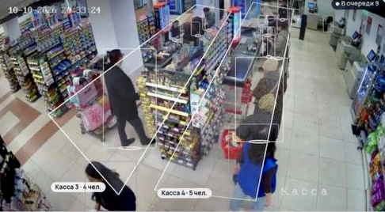
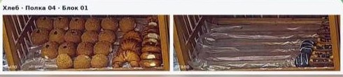

Продуктовый магазин · Palladium Vision
Камеры магазина сами следят за очередями на кассах и пустыми полками
ДоОчередь и пустую полку видит только тот, кто сейчас рядом. Вторую кассу открывают, когда покупатели уже ждут и раздражаются. Закончившийся товар замечают при обходе зала, а до этого полка стоит пустой и магазин теряет продажи.
ПослеСистема размечает очередь у каждой кассы и полки по блокам. Если очередь держится, администратор получает в Telegram просьбу открыть ещё одну кассу. Если товар на полке закончился, приходит фото «было — стало» с номером полки, а после пополнения — отчёт, сколько полка простояла пустой.
Что внедрили
- разметка зоны очереди у каждой кассы и подсчёт людей в реальном времени;
- общий счётчик «в очереди» по кассовой зоне;
- уведомление «откройте ещё одну кассу», если очередь держится дольше заданного времени;
- контроль заполненности полок по отделам, полкам и блокам: овощи, хлеб и другие;
- уведомление, когда заполненность падает ниже порога, с фото «было — стало»;
- подтверждение пополнения: сколько минут полка стояла пустой.
20%порог заполненности полки для сигнала
1 минутаочередь стоит — просьба открыть кассу
3 минутыпростояла пустой полка с виноградом до пополнения

Касса 4 20:33Очередь 5 человек уже 1 минуту, откройте ещё одну кассу.

Хлеб 10:10Закончилась выпечка, полка 04, блок 01. Заполненность 0% при пороге 20%.
Овощи · прилавок 20:30Закончился виноград тёмный, полка 36, блок 01. Заполненность 0% при пороге 20%.
Овощи · прилавок 20:32Полку пополнили, пусто было 3 минуты.